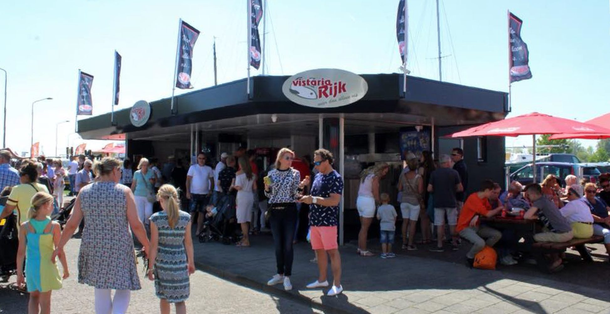
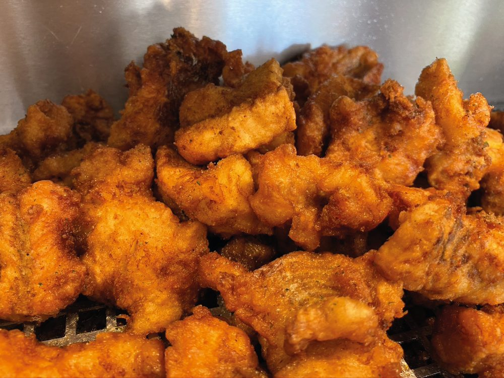
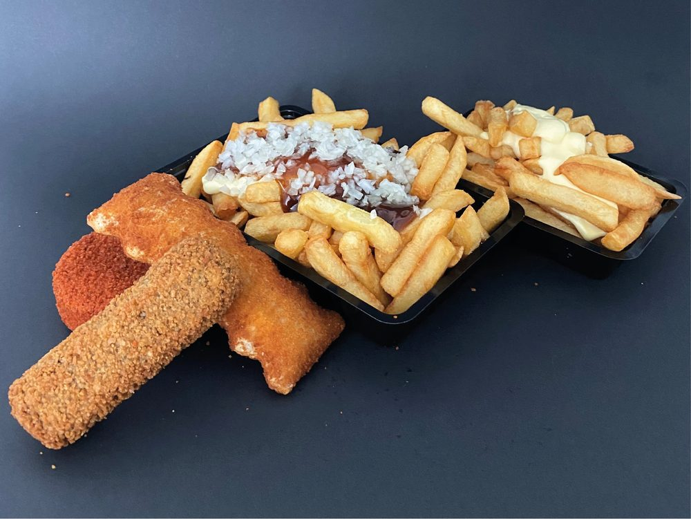
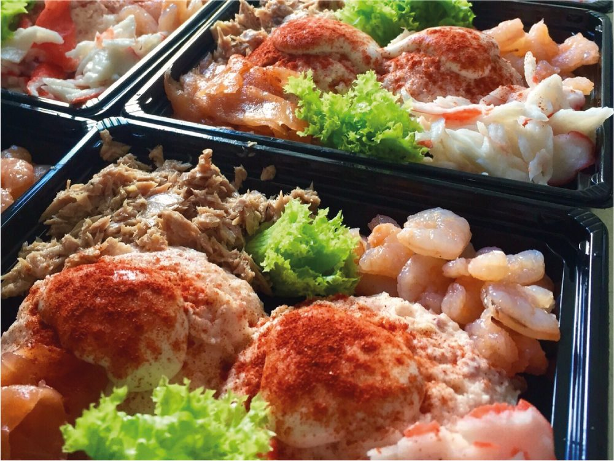
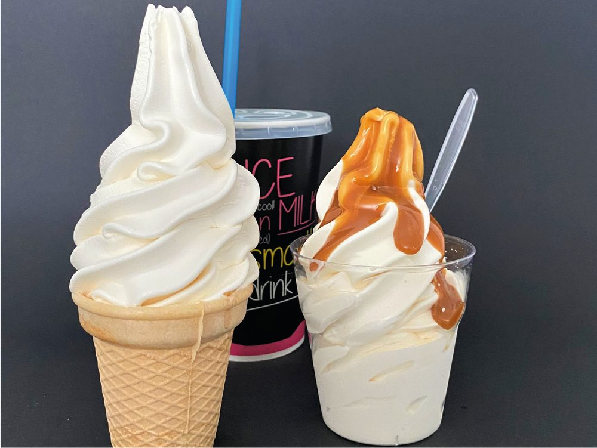
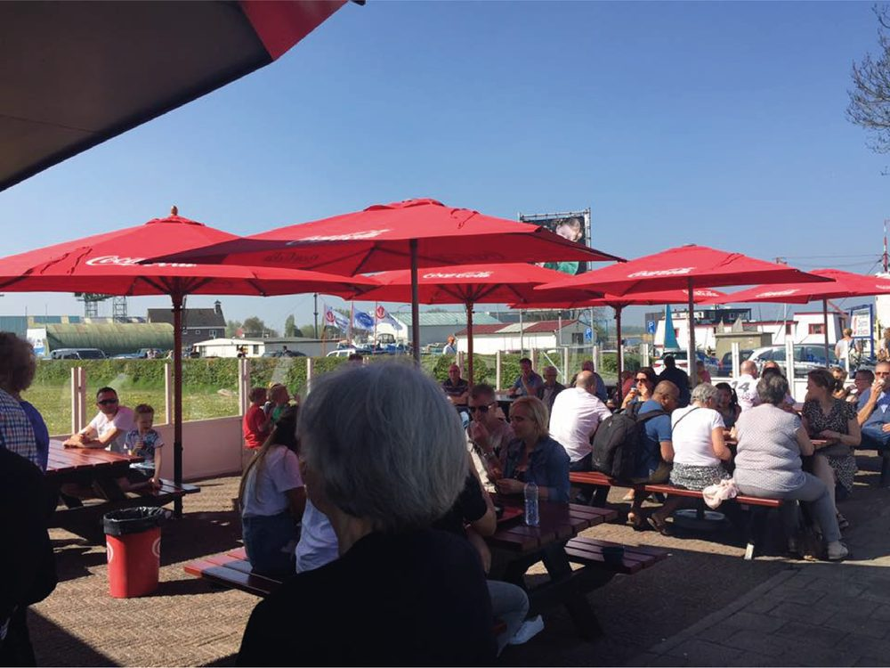
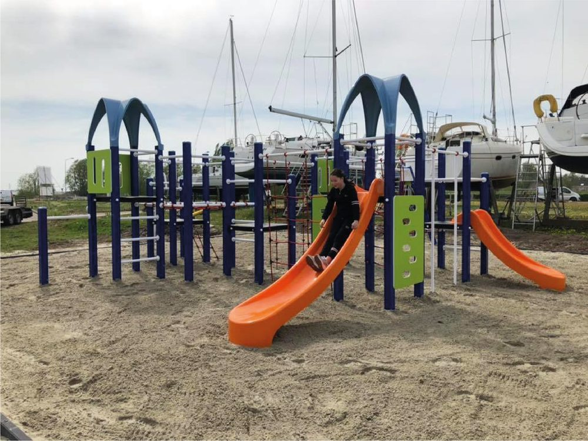
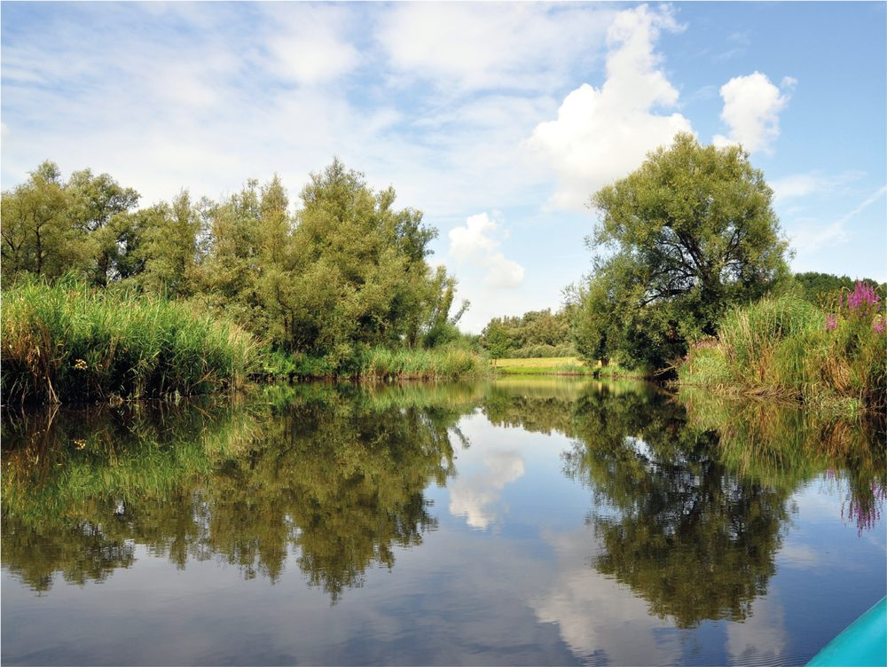
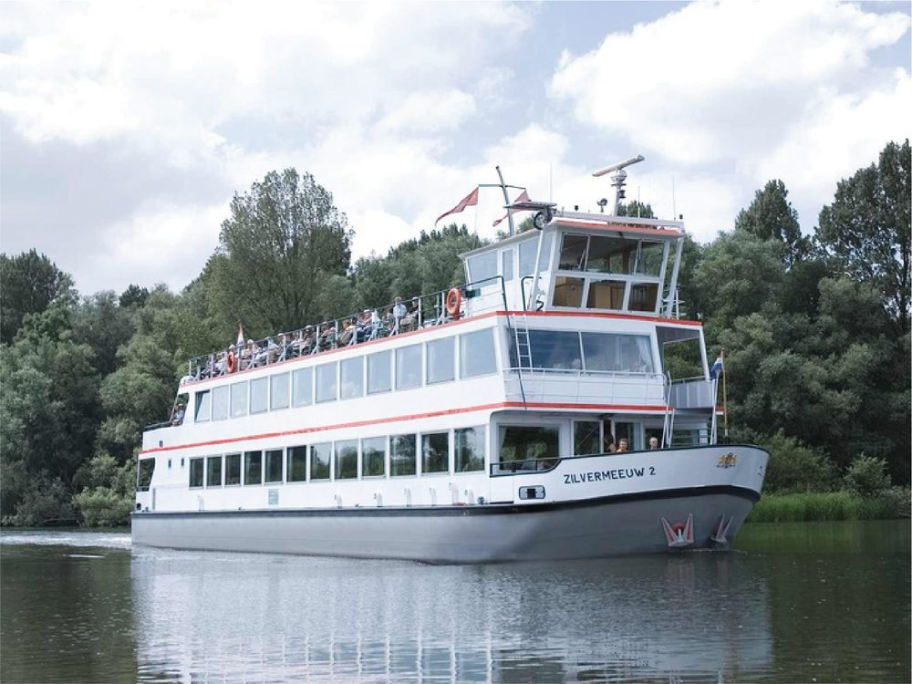
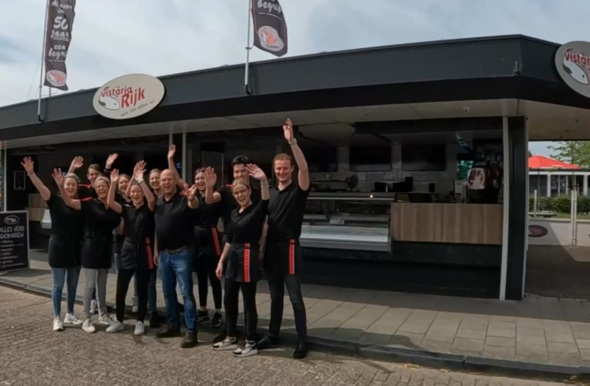

Al meer dan 50 jaar een begrip in Drimmelen
De lekkerste vis en friet, bekend bij jong en oud. Gewoon aan de jachthaven, met terras en speeltuin naast de deur.
Waar u voor komt
Vers gebakken en bereid in eigen keuken.

Kibbeling
Vers voor u gebakken. Voor de grote trek ook als XL portie.
Bekijk vis
Verse friet
Normaal of groot, of als familiezak om mee te nemen.
Bekijk friet
Visslaatjes
Dagvers, met zalm, garnalen, tonijn en surimi crab.
Eigen keuken
(D)roomijs
Softijs als afsluiter, in een hoorntje of bakje.
IJs en drinkenMeer dan alleen vis
Aan de jachthaven van Drimmelen maakt u er makkelijk een middagje uit van.

Geniet op ons terras
Lekker buiten eten, onder de parasols.

Kom spelen in Speelrijk
De speeltuin ligt naast de zaak.

Ontdek de Biesbosch
Drimmelen ligt aan de rand van de Biesbosch.

Vaar rond per boot
Vanuit Drimmelen de Biesbosch in.

Begonnen met de haven
Vistaria Rijk begon in 1968, tegelijk met de opening van jachthaven Drimmelen. Die haven groeide uit tot de grootste inlandse jachthaven van Europa, en wij groeiden mee.
Eerst verkochten we alleen vis. Sinds 1984 bakken we ook friet, en in 1994 bouwden we de zaak zoals u die nu kent. We verwelkomen u graag aan onze zaak!
Kom langs
U vindt ons aan de Nieuwe Jachthaven in Drimmelen.
Vistaria Rijk
Meer dan alleen vis...
We nemen geen telefonische bestellingen aan. We zien u graag aan onze zaak.